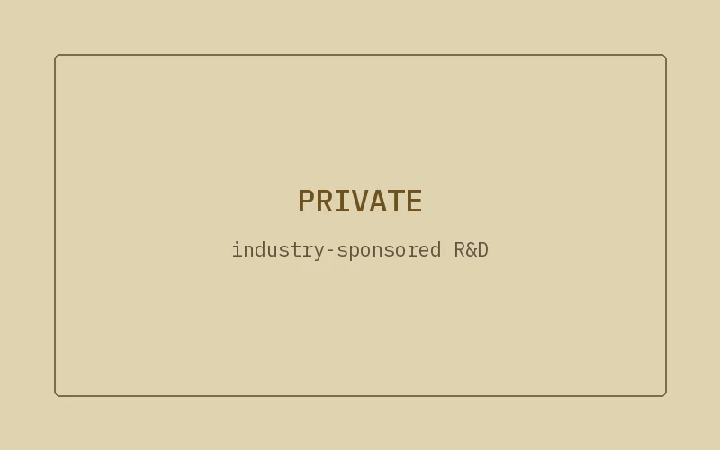

Research · 2026
Hip Exoskeleton Gait Assessment
A hip exoskeleton turned into a gait-assessment platform, using nothing but the sensors it already carries.
AIIMUEncoderPython

What it does
- Turns a hip exoskeleton into a gait-assessment platform: clinical metrics from the robot's own sensors alone, hip-joint encoders and thigh IMUs at 100 Hz.
- Estimates three clinical measures in real time: sit-to-stand power age, Gait Profile Score, and the enhanced Gait Variability Index.
- Knowledge distillation: motion-capture and reference-IMU teachers train lightweight student models that run on the robot.
- Validated leave-one-subject-out on about 30 adults aged 21 to 76, indoors and outdoors, across assistance levels.
Facts
- Year
- 2026
- Status
- Private repository; industry-sponsored R&D
- Stack
- Python, PyTorch
- Sensors
- Hip-joint encoders, thigh IMUs, 100 Hz
- Role
- Estimation pipeline, models, validation